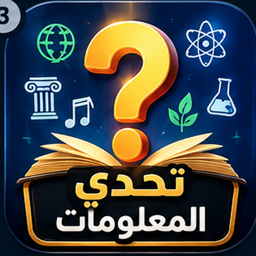
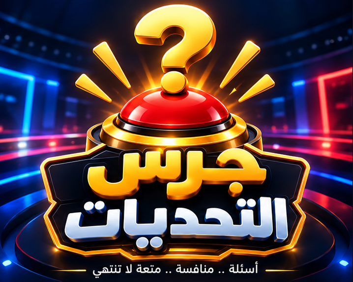

تحدي المعلومات
اختبر معلوماتك في عشرات المجالات

جرس التحديات
أسئلة • منافسة • متعة لا تنتهي
اختبر معلوماتك في عشرات المجالات
خمّن أكثر الإجابات شيوعاً
ما يتم تحديث اللعبة تلقائياً.
فئات وأسئلة ومستويات صعوبة.
مواجهة وجرس وسرقة نقاط.